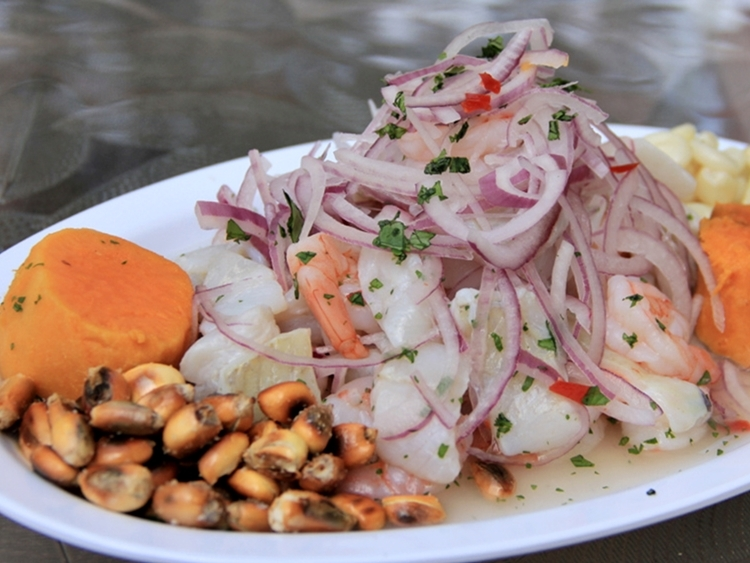
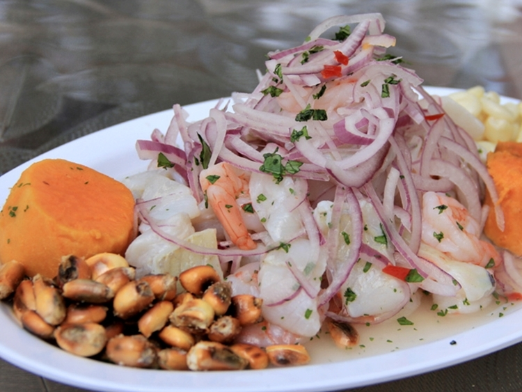

Mis comidas preferidas !!!
Toda la gastronomía peruana es exquisita ya que refleja una mezcla de sabores de distintas culturas la cuál lo hace ser reconocida a nivel mundial pero si me dieran a elegir entre todas las variedades pues elijo: Ceviche y Picante de Cuy
 
